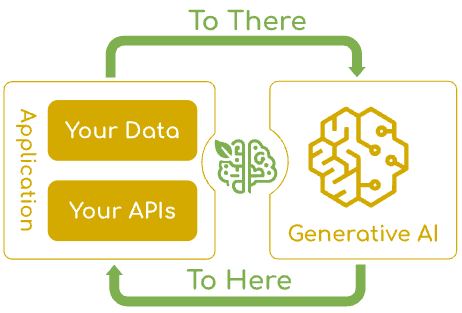
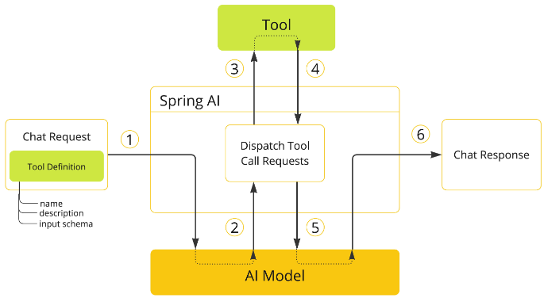

✨ Funcionalidades Principais
Uma solução completa para integração de IA com APIs através de especificações OpenAPI
🚀 Chat Inteligente
Comunicação natural com modelos da OpenAI ou LLMs locais via /api/chat.
Streaming em tempo-real via Server-Sent Events e memória de sessão para manter contexto.
🖥️ Interface Gráfica
Interface web moderna e intuitiva com painel de ferramentas, chat em tempo real, suporte a markdown e design responsivo para uma experiência completa.
🛠️ Ferramentas Dinâmicas
Geração automática de functions a partir de arquivos OpenAPI. Execução assíncrona para melhor performance e responsividade.

🚀 Quick Start
Comece a usar o Swagger Agent em poucos passos
# 1. Clone o repositório git clone https://github.com/cesarschutz/swagger-agent.git cd swagger-agent # 2. Coloque seus arquivos OpenAPI na pasta openapi-specs/ # Adicione seus arquivos .json ou .yaml em openapi-specs/ # Exemplo: openapi-specs/petstore/petstore.yaml # 3. Configure a chave da OpenAI (se for usar OpenAI) export OPENAI_API_KEY="sua_chave_openai_aqui" # 4. Execute a aplicação ./mvnw spring-boot:run # 5. Acesse a interface web # 🌐 http://localhost:8080/chat.html
📋 Pré-requisitos
- ✅ Java 21 ou superior
- ✅ Maven 3.6 ou superior
- ✅ OpenAI API Key (opcional se usar modelo local)
🤖 Configuração de Provedores de IA
Escolha entre OpenAI ou Ollama com configuração simples
🚀 OpenAI (Padrão)
Use modelos da OpenAI como GPT-4. Requer chave de API e conexão com internet.
# Configuração OpenAI
export AI_PROVIDER=openai
export OPENAI_API_KEY="sua_chave_openai_aqui"
# Ou no application.yml
app:
ai:
provider: openai
🏠 Ollama (Local)
Use modelos locais via Ollama. Funciona offline e com maior privacidade.
# Configuração Ollama
export AI_PROVIDER=ollama
export SPRING_AI_OLLAMA_BASE_URL=http://localhost:11434
export SPRING_AI_OLLAMA_CHAT_OPTIONS_MODEL="qwen2.5:0.5b"
# Ou no application.yml
app:
ai:
provider: ollama
🔄 Troca de Provedores
Para trocar entre provedores, simplesmente altere a propriedade AI_PROVIDER:
# Usar OpenAI export AI_PROVIDER=openai # Usar Ollama export AI_PROVIDER=ollama # Importante: Reinicie a aplicação após alterar o provedor
🖥️ Interface Gráfica Moderna
Experimente o chat através de uma interface web intuitiva e responsiva
🖥️ Interface Web Desktop

📱 Interface Mobile

🎨 Design Moderno
Interface com gradientes, efeitos glass, animações suaves e design responsivo que funciona perfeitamente em desktop, tablet e mobile.
🛠️ Painel de Ferramentas
Visualize todas as APIs disponíveis organizadas por projeto. Clique em qualquer ferramenta para ver exemplos de como usá-la.
💬 Chat Inteligente
Conversa natural com suporte a markdown, emojis e indicadores de digitação. Sessões únicas para cada usuário com histórico completo.
🧑💻 Usando com Modelo Local (Ollama)
Execute o Swagger Agent com modelos locais usando Ollama
# 1. Suba o Ollama com Docker docker run -d --name ollama -p 11434:11434 ollama/ollama:latest # 2. Baixe um modelo (exemplo: Qwen 2.5 0.5b) docker exec -it ollama ollama pull qwen2.5:0.5b # 3. Configure o projeto para usar o Ollama export AI_PROVIDER=ollama export SPRING_AI_OLLAMA_BASE_URL=http://localhost:11434 export SPRING_AI_OLLAMA_CHAT_OPTIONS_MODEL="qwen2.5:0.5b" # 4. Execute a aplicação ./mvnw spring-boot:run
ℹ️ Configuração de Provedores
O Swagger Agent suporta múltiplos provedores de IA. Use a propriedade AI_PROVIDER para escolher entre:
- openai - Usa a API da OpenAI (padrão)
- ollama - Usa modelos locais via Ollama
Você pode substituir qwen2.5:0.5b por outro modelo suportado pelo Ollama (ex: llama2, mistral, etc).
📚 API Reference
Endpoints principais e exemplos de uso
💬 Chat Síncrono
POST /api/chat
Content-Type: application/json
{
"message": "Quais pets estão disponíveis?",
"sessionId": "sessao-123"
}
🛠️ Listar Ferramentas
GET /api/tools
# Retorna todas as ferramentas dinâmicas
# geradas a partir das especificações OpenAPI
🔧 Spring AI & Ferramentas Dinâmicas
Como o Swagger Agent utiliza o Spring AI para conectar IA com APIs de forma inteligente
🚀 Spring AI - Fundação Inteligente
🔄 Fluxo de Execução
💬 ChatClient API
Utilizamos a API fluente do Spring AI para comunicação com modelos de IA, similar ao WebClient. Suporte a OpenAI, Ollama e outros provedores com troca fácil de componentes.
🛠️ Function Calling
Implementamos o sistema de Tools/Function Calling do Spring AI, permitindo que o modelo execute ferramentas dinâmicas geradas a partir de especificações OpenAPI.
🧠 Memória de Conversa
Aproveitamos o sistema de Chat Conversation Memory do Spring AI para manter contexto entre mensagens e sessões únicas para cada usuário.
👁️ Observabilidade
Utilizamos os recursos de observabilidade do Spring AI para monitorar operações de IA, incluindo logs detalhados e auditoria de execução de ferramentas.
⚙️ Auto Configuration
Aproveitamos o Spring Boot Auto Configuration do Spring AI para configuração automática de modelos e provedores, simplificando a configuração do projeto.
🌊 Streaming API
Implementamos suporte a streaming síncrono e assíncrono para respostas em tempo real, proporcionando uma experiência de chat fluida e responsiva.
📋 Sequência de Execução de Ferramentas
O Spring AI suporta chamadas de ferramentas através de abstrações flexíveis que permitem definir, resolver e executar ferramentas de forma consistente.
📝 Fluxo no Swagger Agent:
- 1. Definição da Ferramenta: Incluímos a definição da ferramenta na requisição de chat, com nome, descrição e schema dos parâmetros de entrada.
- 2. Chamada do Modelo: O modelo decide chamar a ferramenta e envia uma resposta com o nome da ferramenta e parâmetros de entrada.
- 3. Execução: A aplicação identifica e executa a ferramenta usando o nome e parâmetros fornecidos.
- 4. Processamento: O resultado da chamada da ferramenta é processado pela aplicação.
- 5. Retorno: O resultado é enviado de volta ao modelo como contexto adicional.
- 6. Resposta Final: O modelo gera a resposta final usando o resultado da ferramenta como contexto.